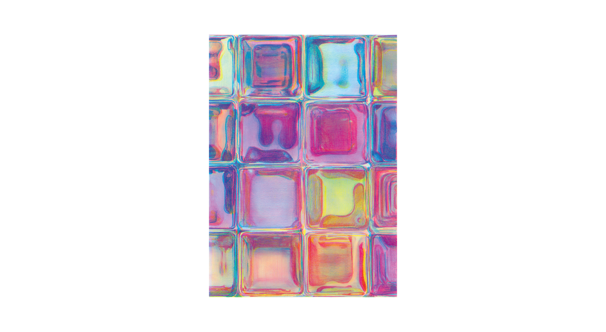
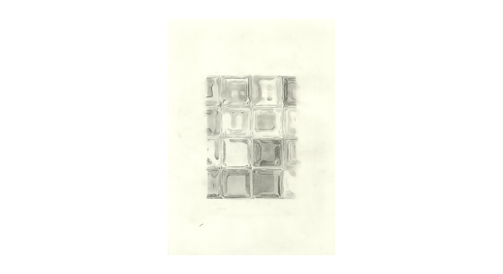
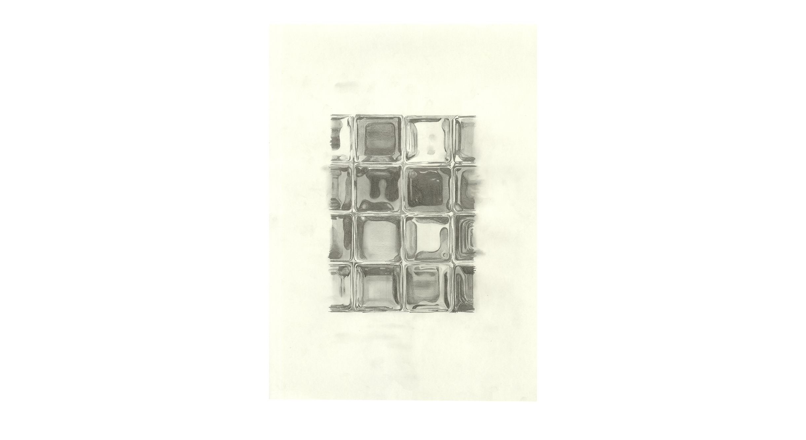
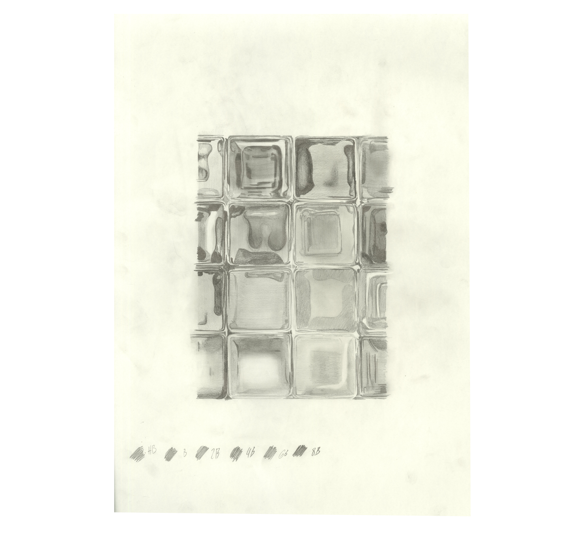

Projects
About me
FMZ POSTCARDS – LUCERNE IN LAYERS
Memories colour the way we see places. For me, Lucerne is filled with personal impressions: the shimmering glass tiles of the Neubad, the low hum of an old VW Beetle heading to a vintag-car gathering. I translated these moments into two postcards. The first uses hand-drawn colour channels in cyan, magenta, and yellow — an analogue exploration of Neubad’s light and texture. The second shows the VW Beetle as a modular construction kit in Lucerne’s colours, inviting the viewer to rearrange, combine, and take part in shaping the image.




Prepress
Markus Wicki
Martin Infanger
Fabio Parizzi
2025